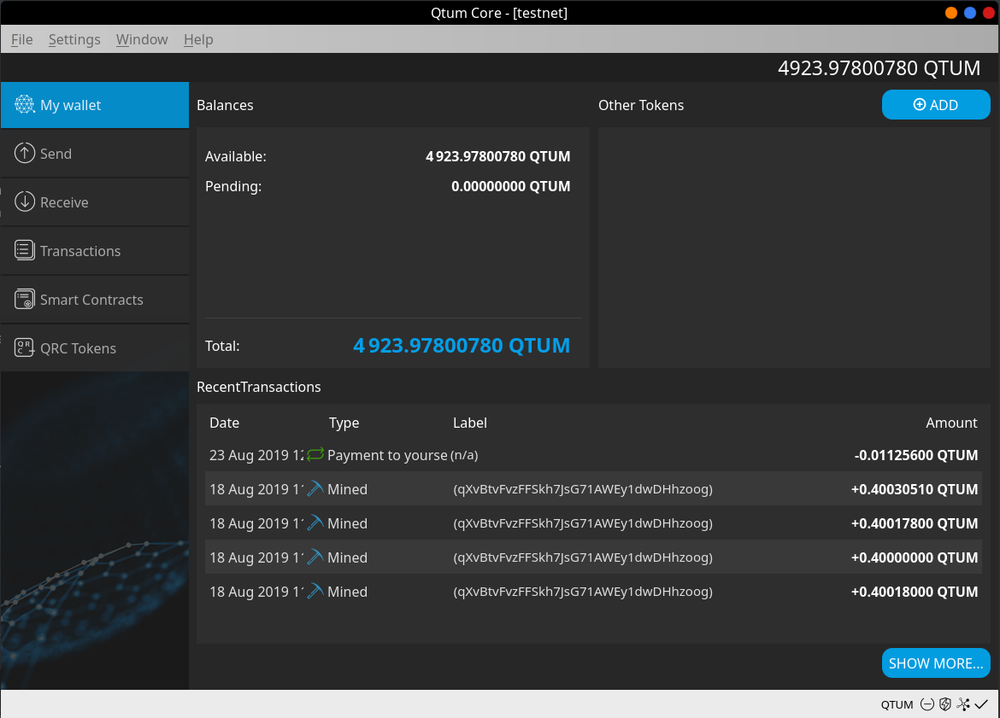
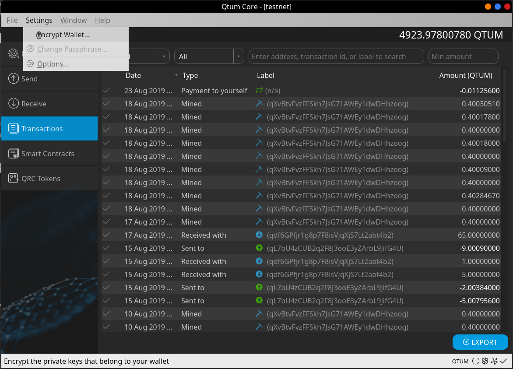
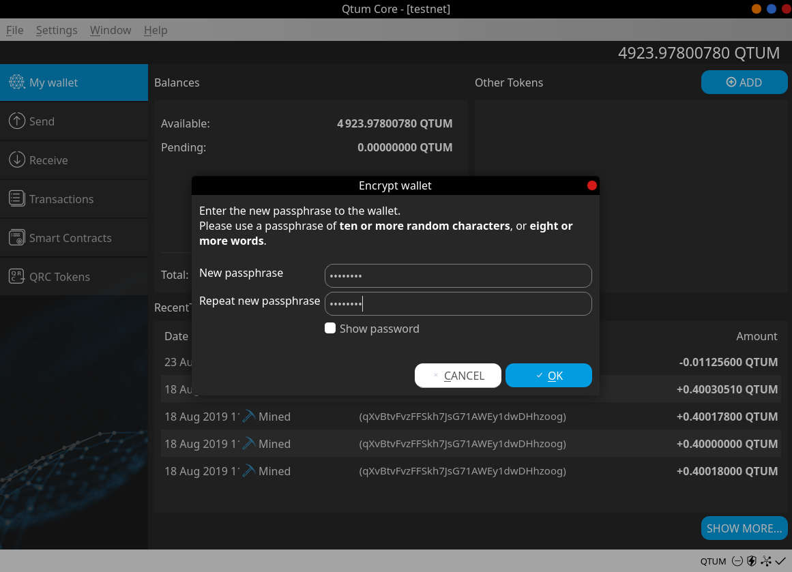
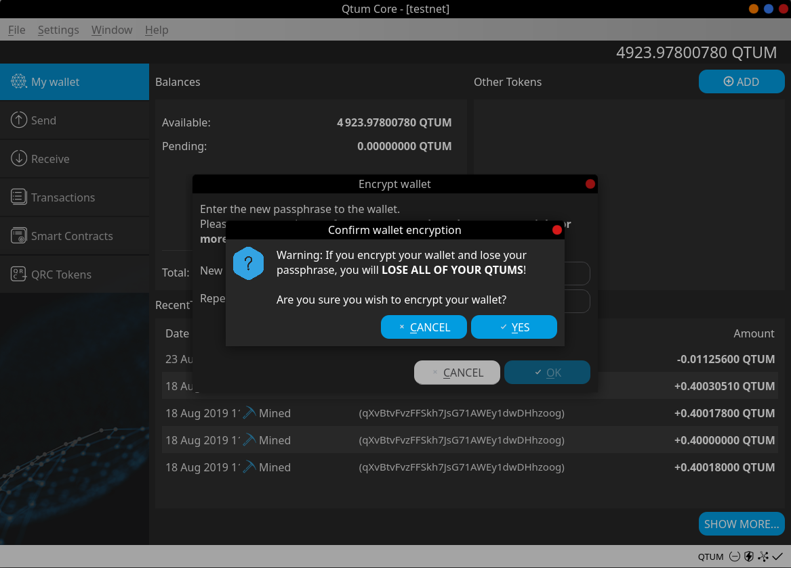
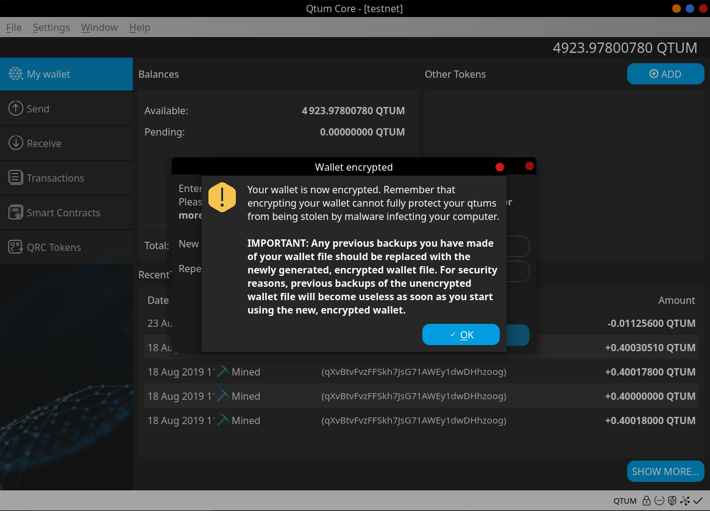
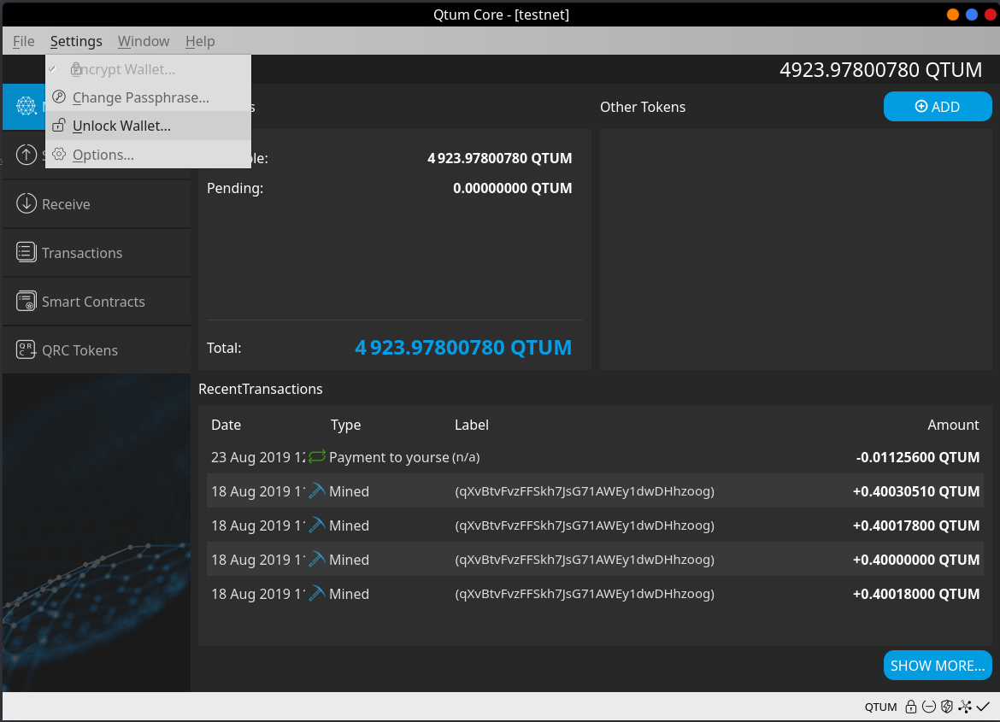
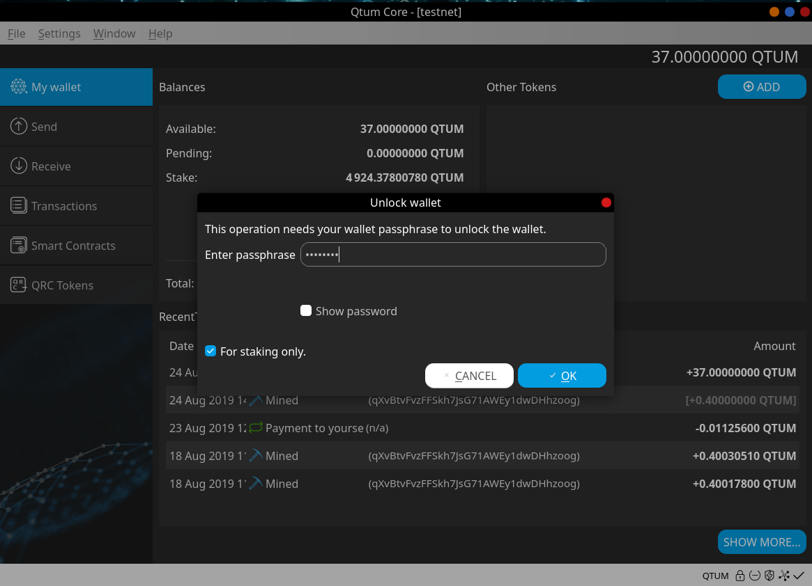
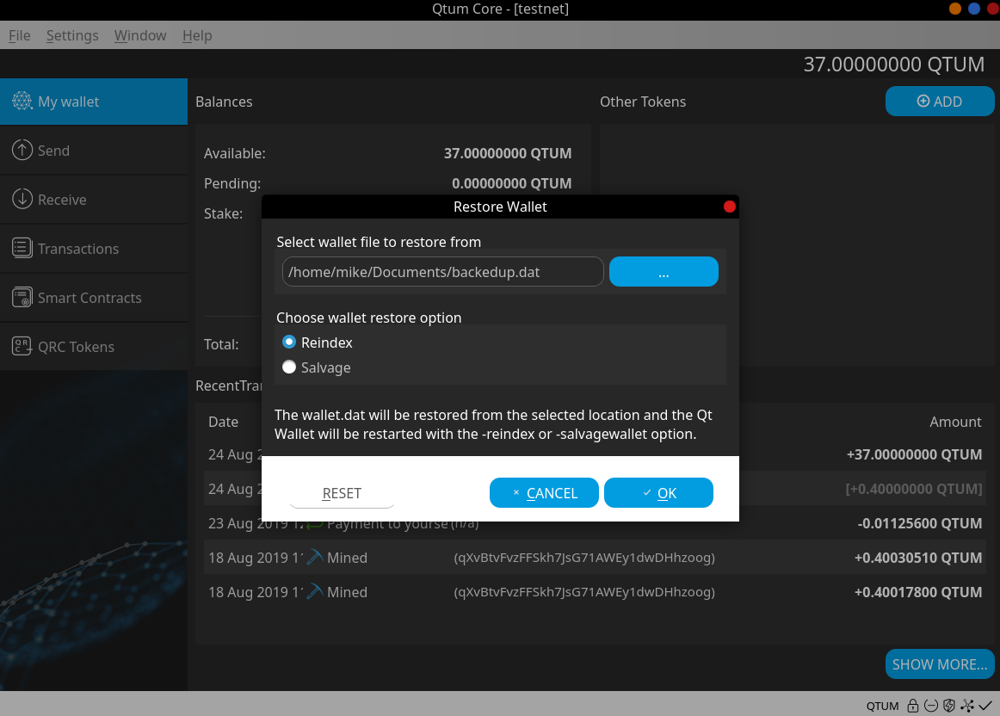
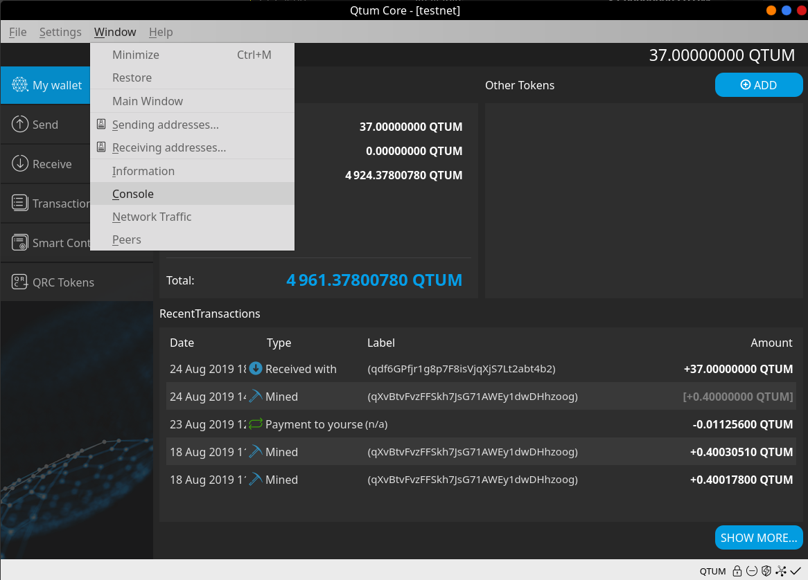
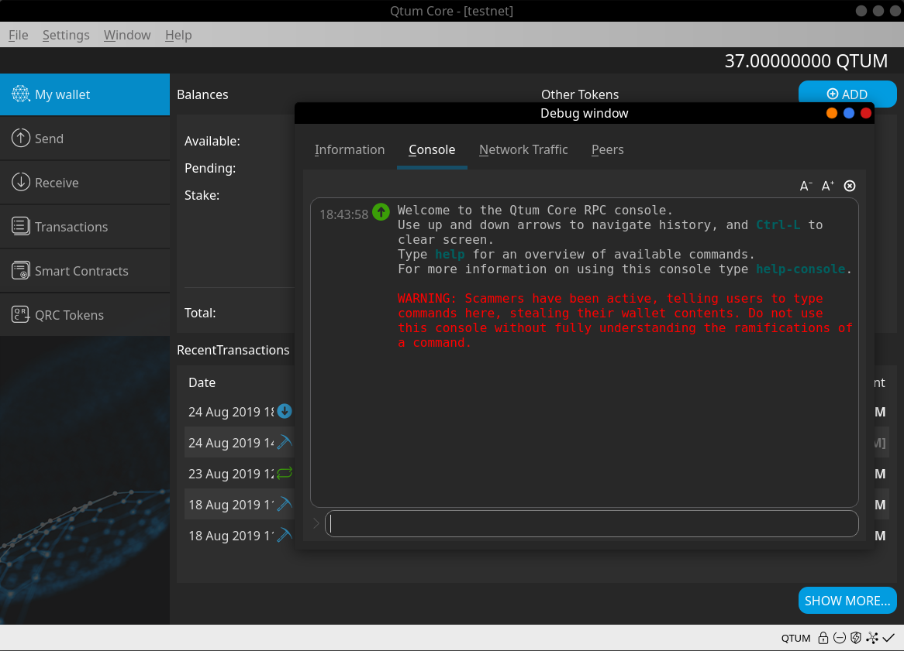

Qtum QT Wallet Tutorial
My Wallet
This is the Qtum wallet “My Wallet” page, it shows the following:

Balances
- Available
- Pending
- Total
Other Tokens
If we own any tokens, they'll show here, including balance and contract info.
Transactions
This shows any transaction that may have taken place, both incoming and outgoing transactions are displayed, this includes staked coins as well.
Basic wallet functions
On the left side of the wallet, we can find basic wallet functionality such as:
- Send
- Receive
- Smart Contract
- Transactions (This is a more detailed and full historical set of transactions)
Send Menu
On the send menu, we have different functions, all are quite basic to learn and use.

Pay to: Here we’ll enter the address we want to send Qtum to (Only Qtum ignition addresses will work).
Label: Optional, as it’s stated, it’s just a name/tag
Amount: Here we enter the amount of Qtum we want to Send
Once all fields are covered, we can click on the “Send” button and the Qtum coins will be sent to the address we entered above.
Receive
Here we can display our Qtum wallet address and even generate new ones!
This is useful for receiving payments from more than one sender and helps you keep track of each transaction.

To obtain the deposit address, simply click on “Request Payment” and you’ll see a popup dialog show up with your Qtum wallet deposit address. Here you can receive coins from your exchange or from other users. For this tutorial, we’ll do a test deposit of 54.9 Qtum.
Transactions
Here you can see both incoming and outgoing transactions, shows every historical transactions.

Wallet Encryption
First, let’s encrypt this wallet before making the backup, this will allow the backup to be encrypted as well. Go to settings -> Encrypt wallet.


Next, let’s enter the password for this wallet, please remember this password because without it you’ll lose access to your Qtum.

Lastly, we get a warning reminding us to save/remember this passphrase as there's no way to recover your Qtum without it

NOTE: On Qtum 0.18x, the wallet doesn't restart after encrypting. After you see the above message, the wallet is already encrypted and ready to use.
Unlock Wallet
To unlock the wallet for sending and private key commands use Settings - Unlock Wallet to reach the Unlock wallet page. 
Use the Unlock wallet page to completely unlock the wallet(uncheck the For staking only box). To unlock the wallet for staking only, follow the procedure for Staking below. NOTE If the wallet is unlocked for staking only on this Unlock wallet page, the Stake menu Staking button must also be clicked to the right to activate staking.

Wallet Backup
It's recommended to make the backup after encrypting the wallet.

To access the backup option, we go into File/Backup Wallet and then we enter route and name.
After the backup’s name is entered and we’ve verified the route where the wallet is being saved to, we can click on save. Now we’ve successfully backed up our wallet.
Restore wallet backup
Go to File -> Restore wallet, this will open a dialog which will allow us to restore directly from the Qtum-core QT wallet!


Here we selected the wallet backup with the reindex option selected (salvagewallet can also be used if necessary).
Staking
In order for staking to take place we must:
- Have a transaction with more than 500 confirmations on the blockchain
- Unlock our wallet prior to staking (preferably before reaching 500 confirmations on your inputs).
- Keep our wallet open at all times, otherwise even if our coins are matured, they won’t be able to stake.
Here’s how to unlock the wallet for staking only, starting with version 0.18.2. Select the main menu "Stake” option to show the Stake page. Click the Staking button to the right, then enter the passphrase to unlock for staking only and activate staking.
IMPORTANT: If unlocking the wallet using Settings – Unlock wallet and the Unlock wallet page, the Stake menu Staking button must also be clicked to the right to activate staking.

Remember to have your wallet open 24/7, if you close it, you won’t be able to stake

Please make sure “for staking only” is selected.
Access the console tab
On Qtum 0.18x, the console tab can be accessed from the "Windows" menu, as shown here:


The console tab is incredibly useful, although it's mostly for advanced uses, it is a very powerful tool and can perform actions that aren't really possible using the graphical interface.
This document https://docs.qtum.site/en/commands/ explains in a very clear way how to use the console tab.
Offline Staking
- Delegating Address to Super Staker
- Delegating Address Operations
- Super Staker Configuration
- Launching Qtum Core as a Super Staker
- qtumd Super Staker
- Super Staker Operations
- Restore
Delegating Address to Super Staker
Qtum Offline Staking allows the address for a non-staking wallet (capable of making the delegation assignment transaction) to be delegated to a Super Staker. Offline Staking is non-custodial: the delegation user keeps full control of their coins and private keys. The address delegation is made via a smart contract transaction from the delegation user's wallet which identifies the delegator's address, the Super Staker address, and the fee the delegator agrees to pay. If the Super Staker accepts this fee, it will begin staking the delegated address UTXOs.
The normal rules for staking UTXOs apply to delegated UTXOs:
- UTXOs may only be used for staking after they mature (500 confirmations)
- The Super Staker will set a minimum size of UTXOs to stake, defaulting to 100 QTUM. Delegated UTXOs below this amount will be ignored.
- It is best practice (for optimum returns) to break UTXOs up into sizes of 100 to 200 QTUM each. For users of the Qtum Core wallet, this can be easily accomplished with the command line version of
splitutxosforaddress, described below.
To make the delegation assignment from the Qtum Core wallet, select Stake – Delegations, the Add delegation "+" button in the upper right corner, enter the Staker name (for local reference only), Staker address, Fee you agree to pay, and your Address to be delegated. Leave the default Gas settings alone unless you understand how to set these. The delegation transaction will require at least 0.9 QTUM in fees and any excess will be refunded.

Press Confirm and Yes to send the delegation transaction.
Delegation of addresses may also be accomplished using the Qtum Electrum wallet, which supports Ledger and Trezor hardware wallet addresses.
Delegating Address Operations
The Delegate Address transaction is sent to a smart contract which keeps the delegation assignments and will be picked up by the Super Staker there. You can see Delegated Address block reward transactions in the wallet and also with the explorer qtum.info.
If the wallet is holding QTUM on multiple addresses, the delegation must be made separately for each address (and the transaction fee paid for each address) so it may make sense to consolidate the UTXOs to a single address before splitting UTXOs and delegating. In this case, use coin selection to select and consolidate the addresses. Alternatively, the sendmanywithdupes command could be used to send the entire wallet balance to a new address with appropriately-sized UTXOs.
If the Super Staker accepts a delegation for a particular fee, and then the Super Staker reduces that fee (accepts assignments for a lower fee), to take advantage of that lower fee the user must delegate their address again with the lower fee set.
Delegations from a wallet may be checked on the Stake – Delegations page or with the getdelegationinfoforaddress command.
Backup your wallet to save a copy of the wallet.dat file.
Super Staker Configuration
The Qtum Core wallet provides online Proof of Stake and can be launched and configured to operate as a Super Staker and receive address delegations.
To configure the Qtum-Qt wallet for a Super Staker, select Stake – Super Staking and the "+" button to add a new Super Staker. Enter the Staker name (for local reference only, here using the first part of the address and "10" to denote a 10% fee) and select the Staker address using the dropdown.

To operate as a Super Staker, the wallet must be able to check arbitrary addresses (address index), have logs enabled for smart contract operations(log events), be enabled for staking and the single parameter -superstaking=true sets these three parameters. The first time launching with -superstaking=true the wallet will rescan the blockchain to rebuild the database to add the address index and log events.
Next, the wallet will prompt to be restarted as a Super Staker using Settings – Options – Enable super staking and OK to restart the wallet.

On startup, the wallet will confirm that you want to scan and rebuild the database.

The wallet will show "Reindexing blocks on disk…" and "Syncing Headers" while it rebuilds the database, this may take several tens of minutes depending on your computer.
After launching, go back to the Stake – Super Staking page and select the "Configure super staker" button (the gear symbol will now be visible) to compete the Super Staker configuration. Click the Custom box to see the default recommendations (shown below) or customize the setup. Click OK to complete the setup.

The configuration settings are:
- Minimum fee – the minimum fee offered by delegators that the Staker will accept.
- Minimum UTXO size – this sets the minimum-sized UTXO that will be evaluated for Proof of Stake consensus by the Staker. Over time, the delegated address should accumulate many small block reward UTXOs and it is inefficient to manage all these small amounts (which should be recombined by the delegator).
- Delegation list type:
- Accept all – accept any delegation with the minimum fee or more.
- Allow list – only accept delegations from specific addresses. Use this mode if operating a Super Staker only for specific addresses, such as for your coins.
- Exclude list – addresses to exclude from being accepted for staking.
Next, split the UTXOs to valid amounts for committing stakes by the Super Staker. The UTXOs must be a minimum amount of 100 QTUM. On the Super staker page select the split coins button (trident icon) and use the default values or make adjustments, but no UTXOs under 100 QTUM will be used for staking.

You can also split UTXOs with the splitutxosforaddress command, which can be used for delegated addresses as well. To split the UTXOs between a minimum and maximum value, enter the command:
splitutxosforaddress "address" minValue maxValue ( maxOutputs )
For example, if a wallet held UTXOs of 40, 50, 60, 70, and 800 QTUM, to split these into UTXOs of a minimum 100 and maximum 200 would use the command:
```splitutxosforaddress "qQhm128r4cTuDFSRehLESydnkburYLj9cY" 100 200
{ "txid": "197a199c3ac9dd8df574ca77da15c5da31db3f7101e2108638a3b2f94248b9f7", "selected": "1020.00", "splited": "1020.00" } ```
For this example, the total input was 1,020 QTUM, and the split was 9 UTXOs of 100.0 and one of 119.99566, the wallet sending a "transaction to self" and paying a fee of 0.00434 QTUM.
Previously you could use the sendmanywithdupes command but that took significant formatting and operationally you would want to send to a new address. Of course, after either of these commands, the UTXOs must mature for 500 confirmations before they can be used for staking.
Launching Qtum Core as a Super Staker
The above steps show the transition from a default installation Qtum Core wallet to a Super Staker. The wallet may also be initially launched as a Super Staker to shorten the steps. In this case, the initial blockchain sync is accompanied by building the database for address index and log events (as discussed above) so the wallet is all ready for Super Staking.
The Qtum Core wallet may be launched as a Super Staker with Qtum-Qt using Settings - Options – Main – Enable super staking steps as shown above, or directly through the command line using the -superstaking=true parameter (testnet shown here).

This command for the default program directory on Windows would be:
qtum-qt -testnet -superstaking=true

When the wallet launches and syncs the blockchain (creating address index and log events) it is all ready to add Super Stakers. Configure a Super Staker and then enable super staking on Settings – Options – Main – set "Enable super staking" and the Super Staker will be ready.
qtumd Super Staker
Any address in a Qtum Core wallet running as a Super Staker may receive delegated addresses and operate as an individual Super Staker. The Desktop GUI wallet Qtum-Qt allows configuration of multiple Super Staker addresses with different fees and minimum UTXO sizes. The daemon/server wallet qtumd runs all its Super Staker addresses using the same fee and minimum UTXO size. If a variation is needed across multiple Super Staker addresses with qtumd, it is possible to set these up with the Qtum-Qt wallet and simply transfer the wallet.dat file to qtumd.
The following setup for qtumd shows the use of a single Super Staker address.
After installing qtumd, launch with the following parameters (testnet shown):
./qtumd -testnet -superstaking=true
Optional parameters may be added to change the default fee (of 10%) and minimum UTXO value (of 100 QTUM), for example as:
-stakingminfee=12 -stakingminutxovalue=120
Once the wallet syncs the blockchain, get an address to send some QTUM. This will be the Super Staker address. Use the command:
./qtum-cli -testnet getnewaddress "legacy"
Then send 1,300 QTUM to this address.

This 1,300 QTUM will arrive in a single UTXO, which must be split for the Super Staker operation. Use the splitutxosforaddress command with the default 100 minimum size and 200 maximum size:
./qtum-cli -testnet splitutxosforaddress "qdMp2BNpwL6ZmMEQHfLV5wGNVgmPCuzd7d" 100 200

The command response shows that 1,300 QTUM were selected for splitting, in this case splitting into 12 UTXOs which can be seen with the txid on the Explorer.
At this point, the qtumd wallet is ready for Super Staker operation with address qdMp2BNpwL6ZmMEQHfLV5wGNVgmPCuzd7d, and delegations can be monitored using the command:
getdelegationsforstaker "qdMp2BNpwL6ZmMEQHfLV5wGNVgmPCuzd7d"
Super Staker Operations
The Super Staker must hold UTXOs to commit to stakes for the delegated UTXOs it is staking. The number of UTXOs (of minimum size 100 QTUM) is based on Delegated Weight as a percent of overall Network Weight, and good values are 30 UTXOs for staking 1% of Network Weight, 50 UTXOs for 2.0%, 100 UTXOs for 5% and 160 UTXOs for staking 10% of overall Network Weight.
Super Stakers should monitor their Wallet weight (UTXO weight minus amount currently staking) and add UTXOs if it drops below several thousand.
Make a backup of the wallet (save the wallet.dat file) after changes in the offline staking configuration such as adding a Super Staker or adding a delegation, because the offline staking configuration is saved in the wallet.dat file. If the backup wallet.dat file is lost the configuration may also be restored with Recovery as shown below.
Delegations to a Super Staker may be checked using the "Delegations…" button on the Super Staker page or with the getdelegationsforstaker command.
Restore
Normally delegation and Super Staker configuration are stored in the wallet.dat file. If there are problems with the wallet.dat file the delegation information and super staker information may be recovered using the Restore button on the delegation and Super Staker pages. In this case, the wallet will rescan the "state" contract memory for offline staking transactions for the appropriate addresses.